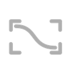

GTA • Grand Tracker Auto V1
Nova versão disponível
O Premiere vai fechar (pedindo para salvar, se precisar) e abrir de novo com o mesmo projeto.
Estilo
Zona morta
Quanto ele pode se mexer antes da câmera andar.

SuavidadeMaior = movimentos de câmera mais lentos.
Fila
Selecione os clipes na timeline 9:16 e clique em Trackear.
Configurações
Comando do Python
Windows: "py -3" ou "python". Mac: "python3".